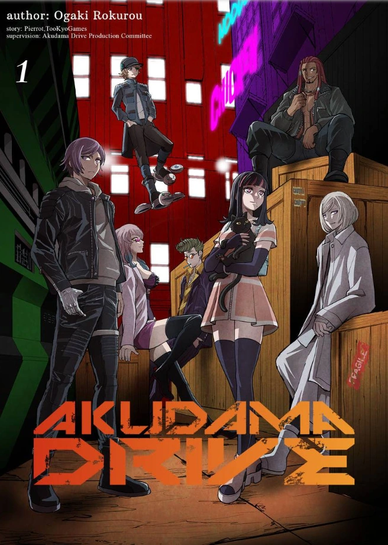
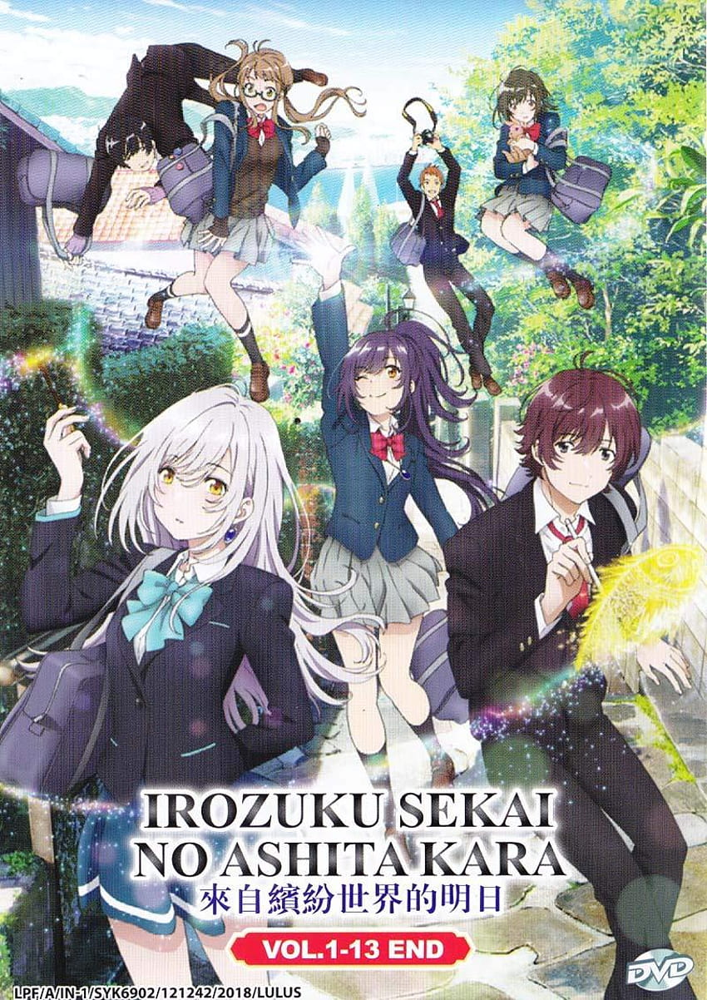

- 
1. Akudama Drive
- ⇉ The bustling metropolis of Kansai, where cybernetic screens litter the neon landscape, may seem like a technological utopia at first glance. But in the dark alleys around the brightly-lit buildings, an unforgiving criminal underbelly still exists in the form of fugitives known as "Akudama."
No stranger to these individuals, Kansai police begin the countdown to the public execution of an infamous Akudama "Cutthroat," guilty of killing 999 people. However, a mysterious message is sent to several elite Akudama, enlisting them to free Cutthroat for a substantial amount of money. An invisible hand seeks to gather these dangerous personas in one place, ensuring that the execution is well underway to becoming a full-blown bloodbath.
A young woman who accidentally becomes a criminal known as Akudama, who are pursued by the government, though she decides to take a fake identity, Swindler, in order to survive after meeting Courier. The series aired from October to December 2020.
- 
2. Irozuku Sekai no Ashita kara
- ⇉ Set in the city of Nagasaki, the story takes place in a world where magic exists in everyday life. Hitomi Tsukishiro is a 17-year-old mage who grew up with stale emotions, as she lost her sense of color at a very young age.
Despite the kaleidoscopic magic ingrained in everyday life, Hitomi Tsukishiro's monochrome world is deprived of emotion and feeling. On a night as black and white as any other, amidst the fireworks spreading across the sky, Hitomi's grandmother Kohaku conjures a spell, for which she has been harnessing the moon's light for 60 years, to send Hitomi back in time to the year 2018 when Kohaku was in high school.
Hitomi's mission seems unclear, but her grandmother assures her that she will know when she gets there. Following a trip through time aboard a train driven by a strange yellow creature, Hitomi finds herself in stoic artist Yuito Aoi's room, and his drawings flood her world with color.
-

3. Fullmetal Alchemist Brotherhood
- ⇉ Abandoned by their father as kids, two young brothers, Edward and Alphonse Elric lived with their mother in a small town called Resembool. After losing their mother to a terminal illness, they try to resurrect her using alchemy - a science which allows you to transform physical matter from one form to another.
After a horrific alchemy experiment goes wrong in the Elric household, brothers Edward and Alphonse are left in a catastrophic new reality. Ignoring the alchemical principle banning human transmutation, the boys attempted to bring their recently deceased mother back to life. Instead, they suffered brutal personal loss: Alphonse's body disintegrated while Edward lost a leg and then sacrificed an arm to keep Alphonse's soul in the physical realm by binding it to a hulking suit of armor.
The brothers are rescued by their neighbor Pinako Rockbell and her granddaughter Winry. Known as a bio-mechanical engineering prodigy, Winry creates prosthetic limbs for Edward by utilizing "automail," a tough, versatile metal used in robots and combat armor. After years of training, the Elric brothers set off on a quest to restore their bodies by locating the Philosopher's Stone—a powerful gem that allows an alchemist to defy the traditional laws of Equivalent Exchange.
|